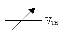
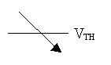
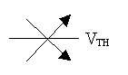
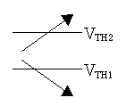
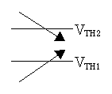

6. Triggering
Trigger signals decide when to start and/or stop the sampling. Trigger has the three following types:
Using the trigger delay capability, the timing when the sampling starts or stops changes depending on the number of the data that are sampled before or after the trigger. When triggers are applied to both start-trigger and stop-trigger, the trigger delay capability is applicable only to start-trigger. In this case, the sampling will be terminated if the number of the data sampled reaches the specified counts before a stop-trigger occurs.
The analog trigger specifies thresholds when to start or stop the sampling. The analog trigger has the following features.
Level Sensitive (positive) A trigger is asserted when the signal changes across the threshold level from low to high. 
Level Sensitive (negative) A trigger is asserted when the signal changes across the threshold level from high to low. 
Level Sensitive (positive/negative) A trigger is asserted when the signal changes across the threshold level from low to high or vice versa. 
Out of Range A trigger is asserted when the signal changes out of the range. 
Into Range A trigger is asserted when the signal changes into the range. 
Using the trigger delay capability, the timing when the sampling starts or stops changes depending on the number of the data that are sampled before or after the trigger.
The external trigger capability determines that the sampling starts or stops when an external signal is asserted.
External Trigger Input Pin It depends on the board/card specifications and the data transfer mode.
Data Transfer Mode External Trigger Input Pin Programmed I/O EXINT IN FIFO EXTRG IN Memory EXTRG IN Bus master EXTRG IN External Trigger Input Configuration Rising or falling edge can be selected to assert a trigger. This capability depends on the board/card specifications, please refer to the user's manual of your board/card. Using the trigger delay capability, the timing when the sampling starts or stops changes depending on the number of the data that are sampled before or after the trigger.
6.4 External Trigger with Mask Using a Digital Input Pin
This capability adds the mask conditions to analog trigger capability. When the signal on the specified digital input pin (hereafter DI pin) is low level, the assertion of the external trigger signal is recognized as valid assertion. In other words, if the signal on the DI pin is high level, the assertion of the external trigger signal is ignored or masked. Available DI pins depend on the board/card specifications and the data transfer mode. Please refer to the user's manual of your board/card and README.HTM.
Using the trigger delay capability, the timing when the sampling starts or stops changes depending on the number of the data that are sampled before or after the trigger.
© 2000, 2013 Interface Corporation. All rights reserved.
[Top]